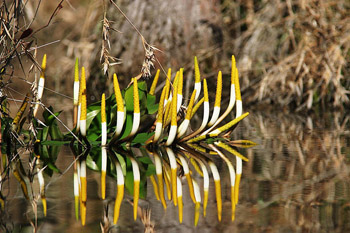

Previous || Next || Return to Mystery Plants || USC Herbarium
This Week's Mystery Plant | Dr. John B. Nelson Curator, USC Herbarium |
|
One of the best-known plant families, which has its species spread nearly throughout the world's tropics, is the philodendron family. This family provides us, of course, with philodendron, and also a large number of familiar houseplants, including spathiphyllum, calla, pothos, monstera, calladium, dieffenbachia, aglaonema, "Elephant ear," "Lords-and Ladies," and the fabulous voodoo lily, which when blooming, produces a smell that reminds most people of a dead rat. Hikers and naturalists in South Carolina will be familiar with our native jack-in-the-pulpit, a philodendron relative, which is a common spring bloomer. All the members of this family maintain their tiny flowers in a narrow spike, which is surrounded by a modified, leafy bract. This week's mystery plant is a member of the philodendron family. It belongs to a genus containing only a single species, distributed in most of the eastern USA from New England through Kentucky and Tennessee, south to Texas. In the Palmetto state, it potentially occurs in every county, but is most often seen in the sandhills and coastal plain. You might see this blooming now at Shealy's Pond Heritage Preserve, in Lexington County. It is a showy aquatic species, often spotted in big patches in blackwater streams or swamps in the midlands, or at the edges of old rice fields on the coast. The plants grow from massive rhizomes buried deep in the muck. The shiny bluish-silver leaves are a foot long (or more) and covered with thousands of tiny, pointed hairs which "repel" water…thus the leaves are always dry. (Dribble some water on the leaves and you'll see.) The flowering spike is bright yellow, with prominent reddish coloration below that. Unlike the other species in the family, our mystery plant lacks a bract that wraps around the spike of flowers. (If you do find this plant, don't be tempted to chew on it. Its cells contain plenty of calcium oxalate, which can cause burning and swelling.) |
 Photo by Jerry Bright |